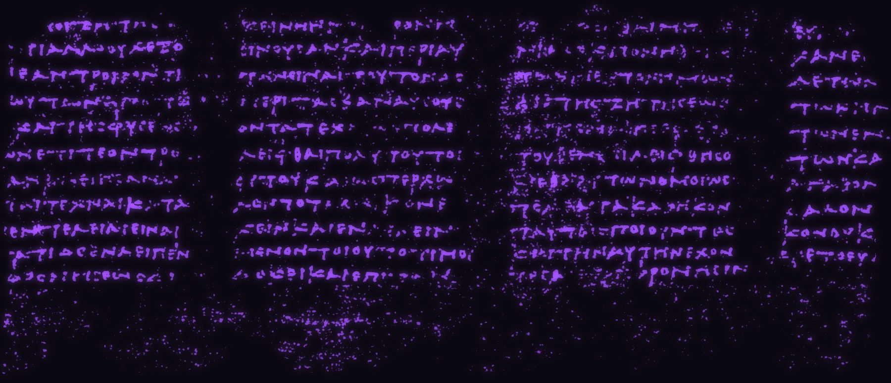

I searched every open AI ink map from the Herculaneum scrolls, 309 traced layers across 13 scrolls, and found candidate Greek letters on four pieces that have no published reading. Every raw image is below so you can check them yourself.
When Mount Vesuvius erupted, it buried a Roman villa at Herculaneum along with its library. About 1,800 papyrus scrolls were dug up in the 1750s, carbonized into lumps of charcoal. A few hundred were never opened, because unrolling them would destroy them. In 2026, PHerc. 1667 became the first scroll read from beginning to end without opening it.
All of this data is open, published by the Vesuvius Challenge.
The shape is the real traced surface from the CT scan. The purple is ink predicted by AI model A from the Vesuvius Challenge community. Slide "Unroll" to flatten it.

PHerc. 1667. On a scroll experts have already read, the same kind of ink maps show clean columns of Greek. One line reads ΤΗΝ ΑΥΤΗΝ ΕΧΟΝ, "having the same." The unread pieces below are much harder.
Several AI models were trained separately to find ink. When two or three of them show the same letters in the same place, that is much harder to explain away as noise. Tap the model buttons to compare the raw images yourself.
These are candidate letters, not translations. Ink maps are noisy, and the eye wants to see words. Only trained papyrologists can confirm a reading. I am sharing the raw images, unedited apart from the purple color, so anyone can check this work. If you are a papyrologist and see something different, I would love to hear it.
Scans, traced layers and ink models: Vesuvius Challenge open data, CC BY-NC 4.0. Scans from the ESRF synchrotron in Grenoble and partners. Ink models built by the Vesuvius Challenge community. Search, 3D renders, video and this page by Matt Macosko. Not affiliated with the Vesuvius Challenge.